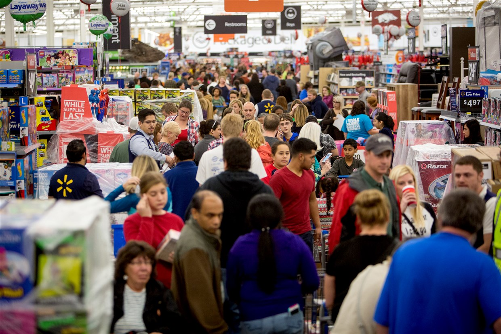

For the First Time Ever, Online Retail Sales Could Surpass in Person Shopping for the Holidays This Year
By: Angela Palumbo
November 14, 2020

Gunnar Rathbun, Credit: Invision for Walmart
Online shopping has become a massive business for the Holiday season. The weekend after Thanksgiving brings in billions of dollars in revenue for stores due to a combination of Black Friday, Cyber Monday
and other
major deals, every year. A large percentage of those sales are thanks to e-commerce.
Due to the coronavirus pandemic, there is a possibility of less money spent this year during the usually busy Black Friday weekend for retailers, compared to years prior. A large amount of the sales done that weekend could potentially be
moved online, as opposed to at the stores themselves, since many stores are moving their Black Friday deals online. Also, customers may feel safer shopping from home during a global pandemic.
According to the US industry report on Retail Trade in the US from IBIS world, “The outbreak of the COVID-19 (coronavirus) pandemic
has had an adverse effect on the Retail Trade sector in 2020.” Back in August when this report was
published, IBIS anticipated a decrease in overall sector revenu of 9.4% in 2020. This report also said that many people have turned to online shopping and e-commerce retailers this year, but the effects on the retail industry are still
major.
According to data from the United States Census Bureau , during the recession that lasted from Dec 2007 to June 2009, there was a decrease of 8.98 percent between 2008 and
2009 in monthly retail trade. As seen in the graph below, a similar
trend with retail trade is happening between the years of 2019 and 2020 due to the economic downfall of the Coronavirus.
Between 2019 and 2020, there has been a percent decrease in retail and food service sales of 1.4 percent (the information in the graph is between the months of Jan to August of each year due to the census information for 2020 being
updated
as far as August).
Even though this economic recession has not caused as much of a decrease in sales as the recession in the earlier 2000’s, it’s important to recognize the cyclical nature of a drop in retail sales during an economic downturn.
Retailers have recognized this change in sales, and according to the IBIS report, many companies that usually focus primarily on their brick-and-mortar locations have shifted their operations to websites and online stores.The National
Retail Federation reported that in 2019, ecommerce accounted for 20.1 percent of total holiday sales, and that because of the pandemic, retailers are planning for a greater amount of their holiday sales to be online this year.
According to research done by Business Insider and depicted in the graph above, there is an anticipated 36 percent increase in total online sales this year for the holiday season. There is also a projected 4.7 decrease in non-ecommerce
sales for the holidays this year.
Doctor Moyi Jia, a professor of communication studies at the State University of New York College at Cortland, agrees that online sales could potentially outweigh in store sales this holiday season. But, she also says there are many other
factors to consider.
“Online retail sales may surpass the in person sales this year. However, the overall sales may decrease compared to the numbers of past years due to the unemployment because of the pandemic. Some people may prefer saving to consuming,” Jia
said.
“Also, the online retailers’ operation capacity is compromised due to shortage of staff, which may lead to deteriorated online shopping experience (such as slow website, payment issues, product out of stock, etc). Finally, there will be
less social gathering this year, so people may decide not to buy gifts for friends and colleagues. Therefore, the overall Black Friday sales this year may decrease.”
While the predictions made by Jia have merit, it’s also important to take a look at the increase in the percentage of people online shopping already this year. Below is a graph that shows the percent growth of US consumers utilizing online
shopping for product categories as of August 2020. The data from this chart comes from McKinsey, and has been cleaned to sho products usually bought around the holiday season.
By looking at the chart it is clear to see that even with the issues Jia said come into play with online shopping during a pandemic, the American people have shifted to e-commerce for their in store purchases.
Retailers, both online and in store, won’t know where their sales will be coming from for the holidays this season until after Thanksgiving. But, with all of the data collected above, it is only fair to assume that online shoppers can
dominate the holiday shopping space in 2020.